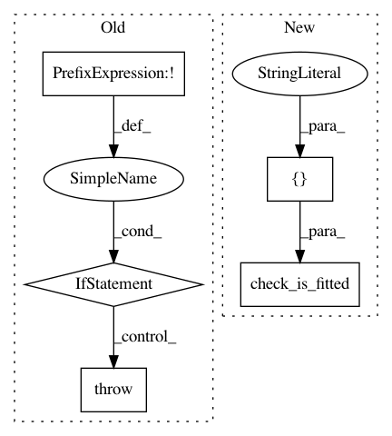

2e81928a3583faa9a5fbbe48d5a114f20027d78c,tslearn/piecewise.py,OneD_SymbolicAggregateApproximation,distance_1d_sax,#OneD_SymbolicAggregateApproximation#Any#Any#,686
Before Change
.. [1] S. Malinowski, T. Guyet, R. Quiniou, R. Tavenard. 1d-SAX: a
Novel Symbolic Representation for Time Series. IDA 2013.
if not self._is_fitted():
raise NotFittedError("Model not fitted yet: cannot be used for " +
"distance computation.")
else:
return cydist_1d_sax(sax1, sax2, self.breakpoints_avg_middle_,
self.breakpoints_slope_middle_,
self.size_fitted_)
def distance(self, ts1, ts2):
Compute distance between 1d-SAX representations as defined in [1]_.
Parameters
After Change
.. [1] S. Malinowski, T. Guyet, R. Quiniou, R. Tavenard. 1d-SAX: a
Novel Symbolic Representation for Time Series. IDA 2013.
check_is_fitted(self, ["X_fit_dims_", "breakpoints_avg_middle_",
"breakpoints_slope_middle_"])
return cydist_1d_sax(sax1, sax2, self.breakpoints_avg_middle_,
self.breakpoints_slope_middle_,
self.X_fit_dims_[1])
In pattern: SUPERPATTERN
Frequency: 3
Non-data size: 5
Instances
Project Name: rtavenar/tslearn
Commit Name: 2e81928a3583faa9a5fbbe48d5a114f20027d78c
Time: 2020-05-28
Author: romain.tavenard@univ-rennes2.fr
File Name: tslearn/piecewise.py
Class Name: OneD_SymbolicAggregateApproximation
Method Name: distance_1d_sax
Project Name: dnouri/skorch
Commit Name: 7d275df28d49de782373174a0882bc8c31fda844
Time: 2019-08-12
Author: BenjaminBossan@users.noreply.github.com
File Name: skorch/net.py
Class Name: NeuralNet
Method Name: save_params
Project Name: dnouri/skorch
Commit Name: 7d275df28d49de782373174a0882bc8c31fda844
Time: 2019-08-12
Author: BenjaminBossan@users.noreply.github.com
File Name: skorch/net.py
Class Name: NeuralNet
Method Name: load_params